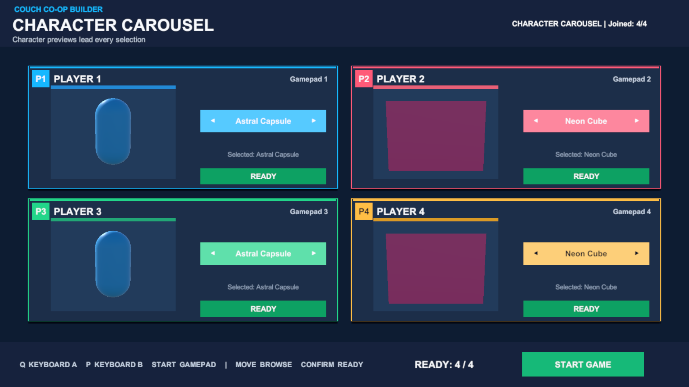
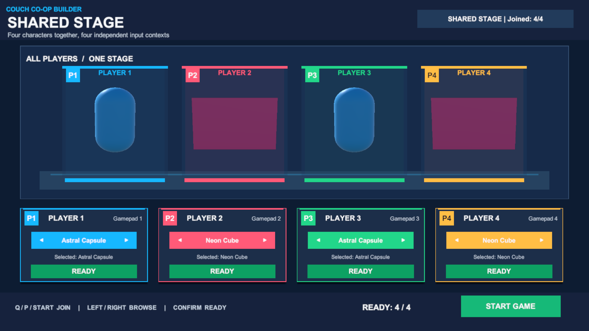

Lobby Templates and Existing Canvas¶
Use Tools > LevelArgento > Couch Co-op Builder > Setup Wizard to copy a supplied presentation or connect your own Canvas. Begin with Quick Start; Chapter 3 — Setup Wizard explains the current steps, outputs and saving. Couch-owned focus and navigation are built in.
Supplied lobby presentations¶
Create New Lobby offers Individual Panels, Shared Stage and Character Carousel. Each has four authored visual slots; the Wizard disables unused slots for a smaller capacity. They use the same character-selection and shared Start services. Framework capacity is described in Player scope; Existing Canvas supports your own additional roots.
The copied scene/prefab belongs to your game. In Prefab Mode, edit anchors, positions, fonts, sprites, backgrounds and decorative behavior. Keep the functional binding references or assign your replacements. Use Prefab Variants where helpful. Keep your copy outside supplied paths so updates cannot replace your design.
Existing Canvas¶
Choose Integrate Existing Canvas when you have a lobby design or need five to eight authored player panels. This is a supported setup path. Save the lobby scene first and author one complete root for each supported P1–P8 entry; object names and sample hierarchy names are not requirements.
The Wizard's Player panel dropdown displays the configured players. Fields marked * are required. Supply these references for each player:
| Assignment | Purpose / boundary |
|---|---|
| Player UI Root | Entire authored panel; one unique root per player on the assigned Canvas |
| Choices Root | Controls shown after Join; contained by that player's root |
| Waiting State Root | Your join prompt shown while the seat is empty; contained by that player's root |
| Character Selector | An authored Button inside Choices Root; one reusable selector browses the catalog |
| Selector Label | Either Legacy Text or TextMeshPro (TMP) beneath that player's root |
| Preview Root | Authored preview container inside the player's root |
| Preview RawImage | Displays the preview texture; inside Preview Root |
Assign one authored shared Start Button on the Canvas. The Ready count label, focus highlight and per-player Start focus indicators are optional. Indicators can live elsewhere on that same Canvas; each assigned indicator belongs to one player.
Under Optional authored presentation, you may assign portrait/accent Images, focused/confirmed/previous/next character labels, identity/device/Ready labels, and Ready / Not Ready state roots. Optional previous/next labels are for custom presentations; the supplied carousel does not need them. Leave unused targets empty. Use one text implementation per role; TMP labels need an authored font.
Suggest unique components in this root only proposes references with exactly one candidate. It does not choose among multiple Buttons or RawImages. Review every suggestion and all required roots before applying.
Input and navigation wiring¶
The Wizard adds/reuses nonvisual services and one independent input/focus/preview context per configured player. Each has its own MultiplayerEventSystem, InputSystemUIInputModule, PlayerFocusManager, PlayerUiInputModeDetector and PlayerFocusScope. The authored player root defines the player's UI boundary; the shared Start router is intentionally shared.
Advanced fields allow existing per-player EventSystems and preview hosts. Leave them empty to create missing components. Do not share the same EventSystem or input module between players. Keep each EventSystem with its input module in the saved lobby scene; its playerRoot must match that player's root. The Wizard reuses already-bound contexts on rerun.
Default lobby controls remain separate from gameplay input. Each player browses/confirms independently. Focused character previews and the committed selected Character ID are separate: browsing or moving UI focus does not itself commit a selection or clear Ready. Confirm commits the selected ID and sets Ready. Scene-local Ready resets when the lobby is reconstructed; intentional Leave clears the session's selection.
There is one shared Start Game action. Every joined session must be Ready and have available input; a reserved disconnected session blocks Start. Empty seats do not count. Start occurs only after an eligible player's submit, not automatically when the last player becomes Ready.
Visual ownership and previews¶
Your prefab/Canvas owns all visible UI: layout, player roots, Buttons, labels, Images/RawImages, frames and backgrounds. Runtime code updates assigned content, preview textures, functional visibility/interactability and navigation. It creates no replacement visual hierarchy and does not restyle your layout. Surviving sessions keep their root through scene transitions; intentional Leave permits the lowest available Player Index to be reused.
The preview host owns scene-local rendering resources. Preview content prefers a Selection Preview Prefab, then Gameplay Prefab, portrait, and named placeholder. Dedicated presentation prefabs are recommended when gameplay initialization has side effects. See Character Catalog and Previews.
Apply, extend and check¶
- Choose Characters and capacity, then connect the saved Canvas and every required player entry.
- Choose the gameplay destination, optionally configure cameras, and resolve Review errors.
- Apply Setup, then save the lobby and any modified gameplay scene. Existing Canvas scene wiring supports Undo; Project scene-list changes are separate.
- Join and confirm independently; move focus to shared Start, enter gameplay, and return. Check that selection/identity persist, Ready resets, and authored layout remains yours.
- To extend later, author more complete roots, increase Maximum Local Players, assign the new entries and Apply again. Existing contexts are reused. Do not duplicate EventSystems manually just to rerun setup.
For API identity, object/input ownership and optional reversible Drop Out, see Gameplay Integration. For optional Shared/Split management, see Split Screen Cameras.

Figure 2. Character Carousel: four authored panels, independent selection and a shared Start control.

Figure 3. Shared Stage presents four independent player contexts together.